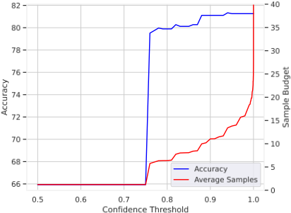
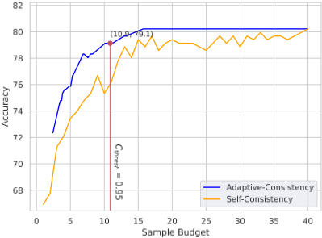
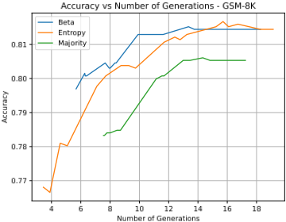
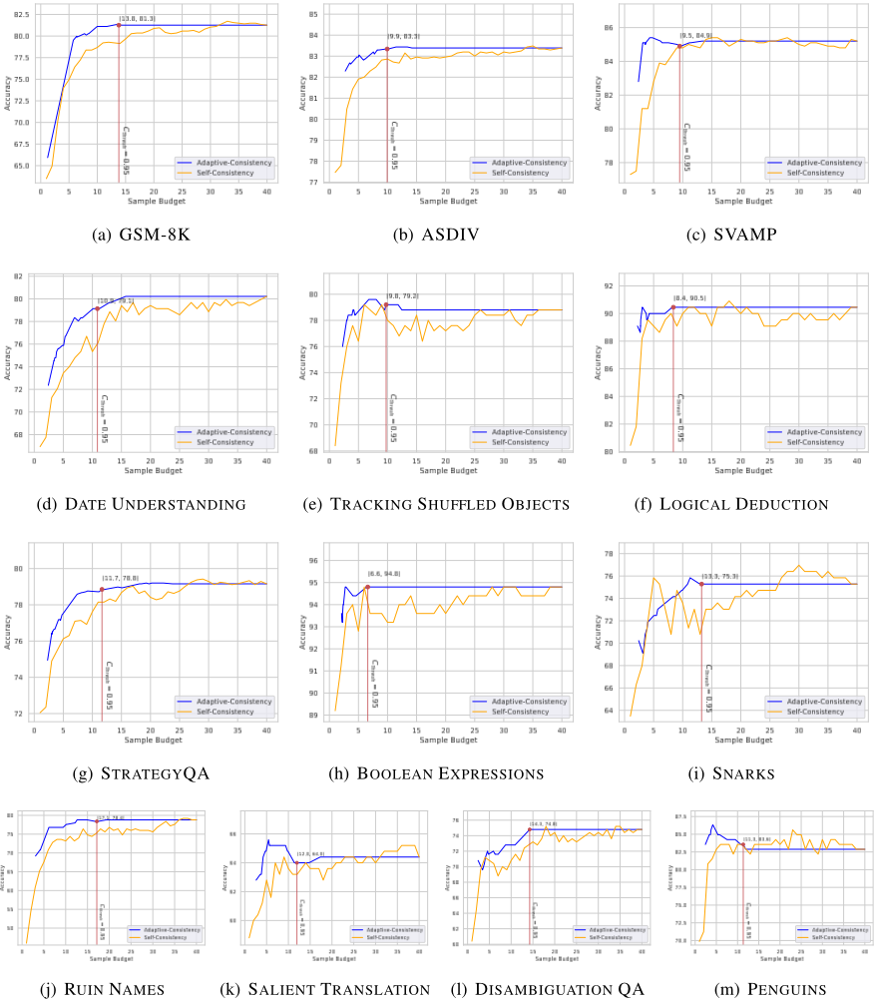
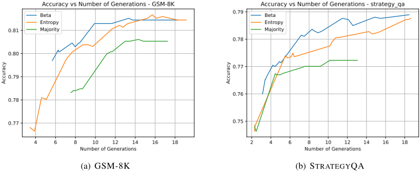
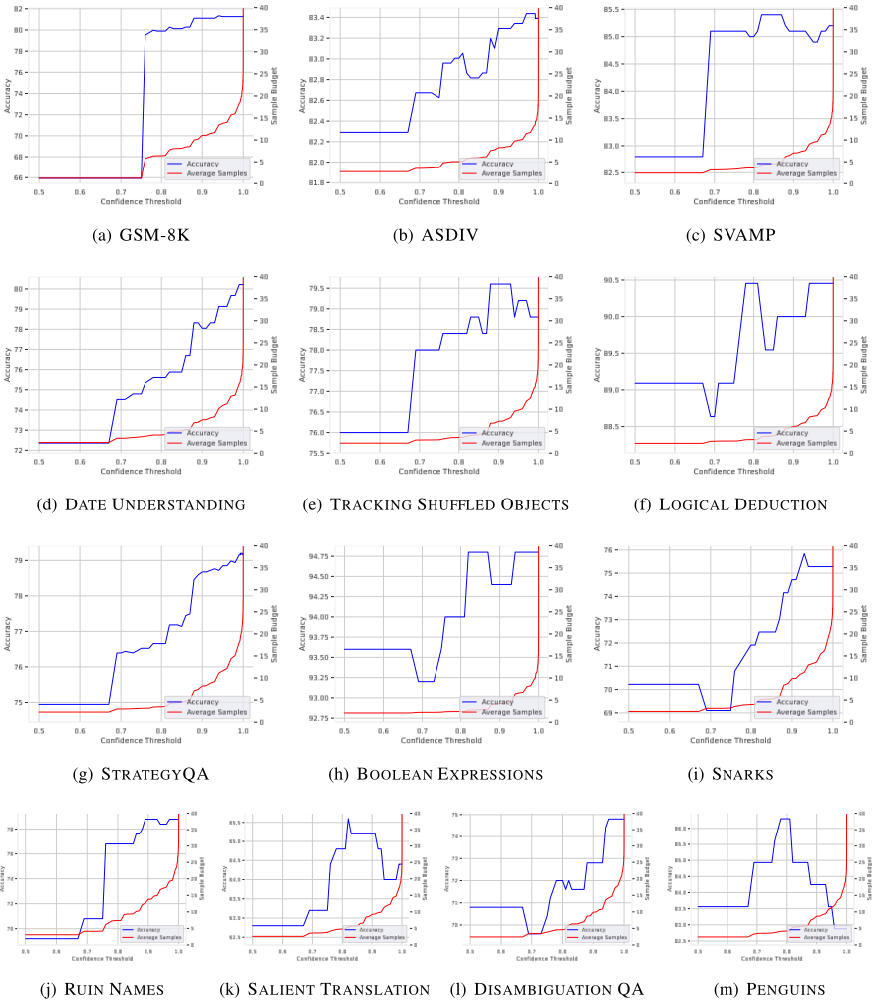

Let's Sample Step by Step: Adaptive-Consistency for Efficient Reasoning and Coding with LLMs
Let's Sample Step by Step：基于 Adaptive-Consistency 的 LLM 高效推理与代码生成
简介
Self-Consistency 通过对同一问题多次采样并做多数投票来提升 LLM 输出正确性，但对每个问题都固定采样 k 次，在多数答案早已明确时仍继续采样，造成大量浪费。论文提出 Adaptive-Consistency：逐个采样，每步用基于 Dirichlet 分布（实用上简化为 Beta 分布）的轻量停止准则估计当前多数答案保持多数的概率，超过阈值 0.95 即停止并输出多数答案，从而按题目难度非均匀分配采样预算；对代码生成任务则按测试用例分别计算置信度，以几何平均超过阈值作为停止条件。在 17 个推理与代码生成数据集、3 个 LLM 上，采样量平均减少约 2-4 倍（最高 7.9 倍），准确率平均下降不足 0.1%；在同等平均采样成本下甚至比 Self-Consistency 更准（GSM-8K 上约高 3%）。
问题
现有 Self-Consistency 等多数投票方法对每个问题固定生成相同数量（如 40 个）样本，随着 LLM 规模增大，采样时间与计算成本越来越高（如竞赛级代码生成可能需要多达百万个程序样本）。论文要解决的问题是：能否根据已生成样本之间的一致性，动态决定每个问题的采样数量，在保持准确率的同时大幅降低采样开销。
方法
提出 Adaptive-Consistency，一种推理时、模型无关的动态多数投票方法：逐个从 LLM 采样，每采一个样本后用轻量停止准则决定是继续采样还是停止并报告当前多数答案。停止准则将已观测的唯一答案计数 v 建模为 Dirichlet 分布，计算当前多数元素在重复采样后仍保持多数的概率；由于高维积分代价高，实用版本用只比较前两名计数的 Beta 分布（非信息先验 Beta(1,1)）近似，阈值 C_thresh=0.95。代码生成任务中，将各测试用例视为独立实体分别计算置信度 P，以所有测试用例几何平均超过阈值（如 0.95）作为停止条件。停止准则可灵活替换，论文还比较了 RANDOM、MAJORITY、ENTROPY、DIRICHLET、CRP 等变体。
关键结果
在 17 个推理与代码生成数据集、3 个 LLM 上，采样预算最多减少 7.9 倍，平均准确率下降小于 0.1%
整体（Table 5）：采样预算平均减少 3.2 倍，平均准确率仅下降 0.07%
分模型：CODE-DAVINCI-002 减少 3.4 倍采样且无平均准确率损失；VICUNA-13B 减少 1.9 倍且几乎无损失；GPT-3.5-TURBO 减少 4.4 倍且准确率下降小于 0.2%
分任务类别：数学推理减少 3.3 倍采样（准确率降 0.1%）、常识推理减少 2.9 倍（降 0.2%）、符号推理减少 3.8 倍（准确率保持）、代码生成减少 2.4 倍且准确率提升 0.4%
同等平均采样成本下，Adaptive-Consistency 在所有成本点上准确率均优于 Self-Consistency，如平均采样成本为 10 时在 GSM-8K 上约高 3%
BETA 停止准则比 DIRICHLET 和 CRP 快约 4 个数量级，且即使后者在单核 CPU 上运行，耗时相对 LLM 推理也可忽略
典型场景：SVAMP 上平均每输入少于 5 个样本即可达到与 Self-Consistency 相当的准确率；BOOLEAN EXPRESSIONS 上预算减少 7.9 倍且无准确率损失
统计显著性：3 种子 t 检验显示采样次数差异显著（p 值平均 1.5e-3），准确率差异统计上不显著（p 值平均 0.50）
创新点
区别于固定预算的 Self-Consistency，按样本间一致性非均匀分配采样预算（难题多采、易题少采）；区别于需要额外验证器或多个模型的自适应推理方法，仅用轻量统计停止准则，无需训练、无需架构改动、无需额外模型；方法思想借鉴众包中的自适应聚合（何时追加标注、何时停止），但针对 LLM 推理效率重新设计；代码生成场景提出按测试用例独立聚合的方案，避免 AlphaCode 式跨测试用例拼接向量导致的输出方差高估。
团队参考意义
相关度级别：high
命中能力域：3.5 评测与可靠使用
理由：论文直接命中 3.5 域中的'成本与效率优化'与产出可靠性保障：它研究的是应用层如何以更少采样次数获得同等正确率，属于'把模型用好'而非训练模型，与团队定位完全一致。团队在代码生成与审查、测试辅助、评测保障等流程中若使用 Self-Consistency/多数投票类技术提升输出可靠性，该方法可将采样成本降低 2-8 倍且几乎不损失准确率，是可直接落地的工程优化。与 3.1（上下文/记忆）、3.2（提示设计）、3.3（Agent 架构与工具）、3.4（多智能体协作）无实质关联——论文不涉及上下文组织、提示词创新、Agent loop 或多 Agent 协作。
建议动作：深入精读并做内部分享
中文全文
arXiv:2305.11860v2 [cs.CL] 2023年11月16日
Let's Sample Step by Step: Adaptive-Consistency for Efficient Reasoning and Coding with LLMs
Pranjal Aggarwal 1 Aman Madaan 3 Yiming Yang 3 Mausam 1,2
1 印度理工学院德里分校计算机科学系 2 印度理工学院德里分校Yardi人工智能学院 3 卡内基梅隆大学语言技术研究所
pranjal2041@gmail.com, amadaan@cs.cmu.edu, yiming@cs.cmu.edu, mausam@cse.iitd.ac.in
Abstract
提高大语言模型（LLM）输出正确性的一种流行方法是 Self-Consistency（自一致性）——对 LLM 进行多次轮询采样，并输出出现频率最高的解。现有的 Self-Consistency 技术总是为每个问题生成固定数量的样本，而更好的做法是根据目前已生成样本之间的一致程度，非均匀地分配可用预算。为此，我们提出了 Adaptive-Consistency，这是一种成本高效、与模型无关的技术，它利用一个轻量级的停止准则动态调整每个问题的样本数量。我们在 17 个推理与代码生成数据集和三个 LLM 上的实验表明，Adaptive-Consistency 可将样本预算最多减少 7.9 倍，而平均准确率下降不到 0.1%。1
1 Introduction
大语言模型（LLMs）在文本生成与推理（Wei et al., 2022; Kojima et al., 2022; Wang et al., 2022a; Mishra et al., 2022）、数学推理（Lewkowycz et al., 2022; Gao et al., 2022; Arora et al., 2023）以及代码生成（Li et al., 2022; Madaan et al., 2023b）等各类任务中的应用日益广泛，这凸显了提升其输出正确性的重要性。实现这一目标的一种流行方法是 Self-Consistency（Wang et al., 2022b），这是一种多数投票技术：针对给定输入生成多个输出样本，并依据样本中出现频率最高的输出做出最终决策。
当前的 Self-Consistency 方法通常采用固定预算的方式，即生成预定数量（例如 40 个）的样本来做出决策。然而，随着 LLM 的规模和复杂度不断增长，与多数投票相关的采样时间和计算成本正变得愈发具有挑战性。这一挑战在竞赛级代码生成（Li et al., 2022）等高风险应用中尤为明显，在这类应用中，生成大量程序（有时多达一百万个）对于最大化性能至关重要。
1 代码与 LLM 输出可在 https://sample-step-by-step.info/ 获取。
为应对这一挑战，我们提出了 Adaptive-Consistency，这是一种成本高效、与模型无关的多数投票技术。Adaptive-Consistency 采用一种轻量级的停止准则，为每个输入动态调整样本数量（n），而不是使用固定预算（k）。其直觉在于：如果在采样少于 k 个答案（n < k）之后就已经以高置信度确立了明确的多数，那么就无需生成更多样本。
Adaptive-Consistency 利用狄利克雷分布（Dirichlet distribution）对不同样本的概率分布进行建模，使我们能够量化多数元素领先于其他元素的置信度。例如，若多数元素在前 10 个样本中出现了 9 次，那么即使采样到 40 个样本，它仍保持为多数元素的可能性也非常高（> 99%）。这使得 Adaptive-Consistency 可以在此时停止采样，从而节省 30 个样本的成本，而 Self-Consistency 则会继续采样全部 40 个答案。作为一种无需额外训练的推理时技术，Adaptive-Consistency 为所有预训练语言模型提供了一种便捷的开箱即用选项，并提供了在计算成本与性能之间进行权衡的灵活性。
我们在 17 个多样化任务和三个不同规模的 LLM（VICUNA-13B、CODE-DAVINCI-002 和 GPT-3.5-TURBO）上对 Adaptive-Consistency 进行了评估。实验结果表明，Adaptive-Consistency 在成本效率方面优于 Self-Consistency，同时保持了相当的输出质量。在 CODE-DAVINCI-002 上，Adaptive-Consistency 将所需样本数量减少了 3.4 倍，而准确率平均没有下降。在 VICUNA-13B 上，它所需的采样数量减少 1.9 倍，准确率几乎没有下降。类似地，在 GPT-3.5-TURBO 上，它的采样数量减少 4.4 倍，准确率下降不到 0.2%。总而言之，我们的贡献如下：
![Figure 1: An overview of Adaptive-Consistency : Self-Consistency samples a predetermined number of answers, whereas Adaptive-Consistency iteratively samples until a lightweight Stopping Criteria, decides to report the majority answer. The figure demonstrates an example where Adaptive-Consistency reduces sampling costs by 4x, requiring only ten samples to report the majority answer. The bottom-left graph contrasts Adaptive-Consistency with Self-Consistency across three reasoning categories, showing an average sample budget reduction of 3 . 3 × with a negligible 0 . 04% drop in accuracy.](assets/a416/figures/fig_1.png)
2 Background
上下文少样本提示（In-Context Few-Shot Prompting） 上下文少样本提示是大语言模型（LLMs）采用的一种技术，用于从给定任务输入中提供的有限数量示例中学习并进行泛化。通过在少量示例上对模型进行条件化，模型无需微调或额外训练即可快速适应新任务。具体而言，提示 p 通过拼接多个输入-答案示例对 < x i , a i > 构造而成；随后将该提示前置到测试输入 x test 之前，模型生成相应的答案 a test 。
def adaptive_consistency(max_gens, stop_criterion): ↪ → observations = [] for k in range(1, max_gens): observations.append(sample_from_llm()) if stop_criterion(observations): break return majority(observations) def stop_criterion(observations, threshold): # 实现你的轻量级停止准则 ↪ → def self_consistency(max_gens): observations = [] for k in range(1, max_gens): observations.append(sample_from_llm()) return majority(observations)
Self-Consistency Wang et al. (2022b) 提出了 Self-Consistency，该方法通过采样多条多样化的推理链，并使用简单的多数投票机制聚合其输出，从而提升了性能。然而，更高的准确率伴随着计算成本的增加，因为对于同一个问题，必须对 LLM 进行多次提示。
3 Adaptive-Consistency
Self-Consistency 在返回多数答案之前，会从语言模型（LLM）生成预定数量（k）的答案。相比之下，Adaptive-Consistency 方法采用一种增量式的方式来从语言模型中采样输出。在生成每个样本之后，Adaptive-Consistency 会采用一个轻量级的停止准则来判断它应当：1.) 从 LLM 再生成一个额外的样本，还是 2.) 停止采样并报告当前的多数答案。这种灵活的策略使 Adaptive-Consistency 能够针对每个输入动态调整到目前为止已生成的样本数量（n）。正如我们的实验所表明的，n 通常小于 k（平均少 3.3 倍，在某些情况下最多少 7.9 倍），这使得 Adaptive-Consistency 相比 Self-Consistency 所采用的固定预算方法能够提供更高的成本效益。
Adaptive-Consistency 与 Self-Consistency 的区别仅在于停止准则（Listing 1）。停止准则的设计对我们的方法至关重要，因为其目标是在最大化准确率的同时，最小化从 LLM 生成的样本平均数量。我们算法的简洁性使得各种停止准则可以互换使用，每种准则都有其各自的优缺点。接下来，我们将详细阐述一种特定的停止函数选择。
Dirichlet 停止准则 设 n 为到目前为止从 LLM 生成的样本数量，其中有 m 个不重复的样本。设 v = [v_1, v_2, ..., v_m] 为各元素的计数，p_i = v_i/n 为归一化计数。例如，若 n = 10 且 m = 3（生成了 10 个样本，其中有 3 个不重复的元素），若 v = [8, 1, 1]，那么我们可以更加确信 v_1 是答案。另一方面，若 v = [4, 4, 2]，则需要生成更多样本。我们的目标是将这一直觉形式化并加以量化。
按照惯例，设 p_1 = max(p_i)。我们希望评估 p_1 作为多数元素的稳定性。² 具体而言，我们想提出如下问题：如果我们再次重复生成 n 个样本的过程，p_1 成为多数元素的概率是多少？直观地说，如果该概率高于某个预先设定的阈值 C_thresh，那么我们就可以对停止采样并返回 p_1 作为多数元素这一决策更有信心：
为了回答这个问题，我们与 Dirichlet 分布建立起联系。具体而言，我们注意到计数 v 参数化了一个 Dirichlet 分布，即 Dir(V)。³ 这一联系使我们能够通过从 Dir(V) 中抽取更多样本并观察 p_1 作为多数元素的稳定性，来探究采样过程的行为。为了计算 p_1 成为多数元素的概率，我们可以在概率单纯形的适当区域上对 Dirichlet 分布的联合概率密度函数进行积分。该积分可以表示如下：
2 注意，我们重载了该符号，用 p 1 同时表示多数元素及其概率（其含义由上下文可以明确）。
3 Dirichlet 分布是一种以计数 V 为参数、定义在多项分布之上的分布；从 Dirichlet 分布中的每次抽样得到一个多项分布 p 。详见附录 D
在公式 1 中，f ( p ′ 1 , p 2 , ..., p m | V ) 表示以计数 V 为条件的 Dirichlet 分布的联合概率密度函数。p ′ 1 的积分上下限为 0 到 1。概率单纯形 S ( p ′ 1 ) 针对每个 p ′ 1 值定义，满足 p ′ 1 > max m i =2 p i ，且其余 p i 值之和为 1 - p ′ 1 。这一约束确保我们所考虑的是所有能够保持 p ′ 1 多数地位的可能取值。此处我们假设，基于当前的观测集合（ V ），可能的唯一答案数量（ m ）是已知的。在分析部分（§ 5.3）中，我们进一步评估了一种中餐馆过程（Chinese Restaurant Process, CRP）停止准则，该准则放宽了这一假设，不要求预先知道可能的唯一答案数量（ m ）。
Beta 停止准则 由于观测集合中唯一答案的数量可能很大，求解公式 (1) 的计算代价高昂。作为一种近似，我们观察到，确立 p 1 相对于次大概率 p 2 的多数地位，对于我们的目的而言就已足够。
在这一设定下，公式 (3) 中的概率简化为参数为 ( v 1 +1 , v 2 +1) 的 Beta 分布，公式 (1) 则被公式 (2) 所取代。这一近似假设了 BETA (1 , 1) 的无信息先验，使我们能够高效地计算 p 1 为多数的置信度，从而在不引入大量计算开销的情况下做出提前停止的决策。
实证结果表明，其性能与 Dirichlet 停止准则相近，但速度显著更快（见第 5.3 节）。在全部实验中，我们将这一 Beta 停止准则称为 AdaptiveConsistency。
代码生成 现在，我们将注意力转向代码生成（CODE GENERATION）任务，这类任务涉及生成能够正确通过多个测试用例的程序。有关测试用例生成的更多细节见附录 A.4。
代码生成任务的配置会显著影响 Self-Consistency 的度量，因为对于给定的一组测试用例，不同的程序可能产生不同的输出。这种差异可能导致简单的多数投票机制无法有效评估稳定性。为解决这一问题，我们探索了两种不同的方法来聚合多个测试用例上的答案。
在第一种方法中，受 AlphaCode (Li et al., 2022) 所用方法的启发，我们将所有测试用例的输出拼接成一个包含 t 个元素的单一向量，并在整个向量上应用 Self-Consistency。这意味着，只有当两个程序在全部 t 个测试用例上的输出完全一致时，才认为这两个程序是相同的。然而，这种简单的设置可能会高估输出的方差，因为不同的程序针对这组测试用例可能会产生不同的输出。
为了克服这种简单设置的局限性，我们提出了一种替代方法，将测试输入视为独立的实体，并对每个测试用例分别应用 AdaptiveConsistency：
在该公式中，P 通过公式 1 计算得到。当归一化概率——即 P 在全部 t 个测试用例上的几何平均值——超过预定义阈值（例如 0.95）时，Adaptive-Consistency 方法便会终止采样过程。
4 Experiments
超参数 Adaptive-Consistency 中唯一的超参数是与停止准则（Stopping Criteria）中的参数相关的那些参数（C thresh）。我们在 Adaptive-Consistency 中使用较高的 C thresh = 0.95。通过采用较高的阈值，我们旨在保持高准确率，并防止算法过早停止。对于其他停止准则，我们在 GSM-8K 的训练集上调节参数，并在所有数据集上使用相同的阈值。所选阈值对我们方法性能的影响将在分析部分（§ 5.1）中进一步分析。
基线 我们将我们的方法与 Self-Consistency 进行比较，后者是当前最先进的方法。此外，在第 5.3 节中，我们将 Adaptive-Consistency 与不同的停止准则进行对比评估，例如 RANDOM 停止和 MAJORITY（达到多数时停止）、ENTROPY、DIRICHLET 和 CRP。
评估指标 我们使用两个指标来评估我们的方法与基线的性能：从大语言模型（LLM）中采样的平均生成次数，以及整体推理准确率。我们的结果表明，Adaptive-Consistency 在取得与 Self-Consistency 相似性能的同时，通常能大幅减少采样预算。
4.1 Results
表 1 展示了主要结果，并分为两部分，分别展示不同任务类别（上方子表）以及各种语言模型（下方子表）上的结果。我们重点关注效率与准确率之间可能存在的权衡。
不同任务类别上的结果 我们的实验结果表明，Adaptive-Consistency 在不同任务类别上均取得了显著的效率提升——在数学任务中采样次数减少 3.3 倍，准确率下降 0.1%；在常识任务中采样次数减少 2.9 倍，准确率下降 0.2%；在符号推理任务中采样次数减少 3.8 倍且准确率保持不变；在编码任务中采样次数减少 2.4 倍，同时准确率提升 0.4%。这些发现证实了 Adaptive-Consistency 在早期识别多数元素方面的有效性，凸显了其在包括推理与编码在内的各种应用中的潜力。
| Category | Accuracy.Self-Consistency | Accuracy.Adaptive-Consistency | Num. Generations.Self-Consistency | Num. Generations.Adaptive-Consistency | ∆.Num. Gen. | ∆.Acc. |
|---|---|---|---|---|---|---|
| MATH | 73.2 | 73.1 | 40 | 13.8 | 3.3 × | -0.1 |
| COMMONSENSE | 66 | 65.8 | 40 | 15.8 | 2.9 × | -0.2 |
| SYMBOLIC Reasoning | 72.8 | 72.8 | 40 | 13.1 | 3.8 × | 0 |
| CODE GENERATION | 35.2 | 35.6 | 312.5 | 173.6 | 2.4 × | 0.4 |
| Category | Accuracy.Self-Consistency | Accuracy.Adaptive-Consistency | Num. Generations.Self-Consistency | Num. Generations.Adaptive-Consistency | ∆.Num. Gen. | ∆.Acc. |
| Model | Accuracy.Self-Consistency | Accuracy.Adaptive-Consistency | Num. Generations.Self-Consistency | Num. Generations.Adaptive-Consistency | ∆.Num. Gen. | ∆.Acc. |
|---|---|---|---|---|---|---|
| GPT-3.5-TURBO | 76.4 | 76.2 | 40 | 10 | 4.4 × | -0.2 |
| VICUNA-13B | 54 | 54.1 | 40 | 21.7 | 1.9 × | 0 |
| CODE-DAVINCI-002 | 69.7 | 69.8 | 104.1 | 49.4 | 3.4 × | 0 |
| Model | Accuracy.Self-Consistency | Accuracy.Adaptive-Consistency | Num. Generations.Self-Consistency | Num. Generations.Adaptive-Consistency | ∆.Num. Gen. | ∆.Acc. |
不同语言模型上的结果 通过考察不同语言模型上的结果，我们发现 Adaptive-Consistency 与模型无关（model-agnostic），并且能够持续减少生成次数，而对准确率的影响极小甚至没有影响。Adaptive-Consistency 始终能减少所需的生成次数，其中 GPT-3.5-TURBO 减少 4.4 倍、VICUNA-13B 减少 1.9 倍、CODE-DAVINCI-002 减少 3.4 倍，凸显了其高性价比的特质以及对不同规模模型的适应性。此外，准确率上的微小差异和轻微提升展示了 Adaptive-Consistency 的实用价值，强调了其广泛的适用性与模型无关的特性。
5.1 Effect of Confidence Threshold in Adaptive-Consistency
置信阈值 C thresh 是 Adaptive-Consistency 的一个至关重要的超参数，它根据对多数元素所期望的置信水平决定何时停止采样。虽然我们在所有实验中将该阈值设定为严格的 0.95，但在本节中，我们分析了将 C thresh 从 0.5 变化到 1 所带来的影响，以理解模型准确率与成本效率之间的权衡。
在图 2 中，我们给出了一种可视化，考察了置信阈值 C thresh 与 Adaptive-Consistency 在准确率和成本效率两方面性能之间的关系。x 轴表示置信阈值，取值范围从 0.5 到 1。左 y 轴显示模型的准确率，而右 y 轴显示抽取样本的平均数量。
该图（针对 GSM-8K）展示了两条曲线的预期行为：蓝色曲线（准确率）逐渐上升后趋于平稳，而红色曲线（平均样本数）最初呈线性增长，随后攀升得更加陡峭。准确率的平稳表明模型已达到其可达到的最大准确率，进一步的采样不会带来太大提升。与此同时，红色曲线的攀升速率表明，模型需要更多样本才能满足日益严格的停止置信阈值，凸显了准确率与成本效率之间的权衡。更多结果请读者参见附录 C.4。
5.2 Adaptive-Consistency vs. Self-Consistency For Equal Average Sample Costs
第 4.1 节此前已经证明，Adaptive-Consistency 能够使用更少的样本取得与 Self-Consistency 相当的性能。在本节中，我们的主要目标是在各种采样预算下比较 Adaptive-Consistency 与 Self-Consistency 的性能。对于每个固定的采样预算 k，我们对比 Adaptive-Consistency 与 Self-Consistency 的表现，其中 Self-Consistency 将样本预算均匀地分配给每个问题，而 Adaptive-Consistency 则采用非均匀分配，而非在所有实例上进行一致的分配。
我们使用不同的阈值来评估 Adaptive-Consistency，每个阈值都会在成本-质量曲线上产生一个不同的点（#samples, performance）。对于 Adaptive-Consistency 所生成的每个特定样本数

（#samples），我们随后运行 Self-Consistency 以获得其对应的性能。这两种方法在这些数据点上的关系如图 3 所示，该图对 Adaptive-Consistency 与 Self-Consistency 在 GSM-8K 上的性能进行了直观比较。在所有平均样本成本下，Adaptive-Consistency 的准确率均优于 Self-Consistency。例如，当平均样本成本为 10 时，Adaptive-Consistency 在 GSM-8K 上取得了约 3% 更高的准确率。在其他数据集上也得到了类似的结果；完整结果参见附录 C.1。
Adaptive-Consistency 的成功可以归因于这样一个事实：它会根据实例的复杂度调整样本数量，在难以达成明确共识的地方使用更多样本，而在答案一致的地方使用更少样本。因此，在控制成本预算的条件下，Adaptive-Consistency 取得了更优的整体性能。
5.3 Evaluation of Different Stopping Functions
Adaptive-Consistency 允许根据预期目标和需求灵活选择停止准则。在此，我们评估了六种不同的函数：1) RANDOM：以概率 p 随机停止；2) MAJORITY：当最常见答案的多数占比超过某一阈值后停止；3) ENTROPY：当答案的熵低于某一阈值后停止；4) BETA：Adaptive-Consistency 中使用的主要停止准则，基于公式 (2)；5) DIRICHLET：基于公式 (1) 的停止准则；6) CHINESE RESTAURANT PROCESS（CRP）：与 DIRICHLET 不同，CRP 不对可能的唯一答案数量做任何假设。基于可用的观测结果，我们首先对浓度参数（α）进行建模，该参数表示得到一个新答案的概率，然后进行蒙特卡洛模拟以获得当前多数答案的稳定性（更多细节参见附录 C.3）。
| BETA | ENTROPY | DIRICHLET | CRP | |
|---|---|---|---|---|
| Time (ms) | 0.03 | 0.03 | 101.3 | 94.6 |
| | BETA | ENTROPY | DIRICHLET | CRP |
如第 4 节所述，所有这些方法的参数均经过调优。图 4 在一系列期望采样成本范围内将 BETA 与 ENTROPY 和 MAJORITY 进行了比较。在相同采样成本下，BETA 始终取得比两者更高的准确率。此外，正如预期的那样，我们发现 RANDOM 是效果最差的方法，而 MAJORITY 几乎始终表现不如 BETA 和 ENTROPY。虽然 DIRICHLET 和 CRP 的性能与 BETA 相近，但由于代价高昂的多元积分计算，两者都比 BETA 慢约四个数量级。尽管如此，即使 DIRICHLET 和 CRP 运行在单个 CPU 核心上，与大语言模型（LLM）推理相比，它们的时间和成本开销也可以忽略不计。确切的耗时数据见表 2。详细结果见附录 C.2 的表 7。
总而言之，Adaptive-Consistency 在两种场景下尤为有效：(i) 当多数趋势在采样过程早期就已明显时，例如在 SVAMP 数据集上，它平均每个输入使用少于 5 个样本即可取得与 Self-Consistency 相当的准确率；(ii) 对于潜在答案集合有限的任务，例如在 BOOLEAN EXPRESSIONS 数据集上，Adaptive-Consistency 在不损失任何准确率的情况下将计算预算降低了 7.9 倍。
6 Related Work
众包与自适应一致性 Adaptive-Consistency 的灵感来源于众包（crowdsourcing）领域的技术（Lin et al., 2012; Dai et al., 2013; Weld et al., 2015; Bragg et al., 2016）。传统上，众包需要聚合多样化的人类判断，这在资源分配管理上带来了挑战——即根据回答的一致性来判断何时应查询更多贡献者、何时应停止（Doan et al., 2011; Quinn and Bederson, 2011）。早期研究集中于估计“真实”答案与工作者可靠性的概率模型（Dawid and Skene, 1979; Whitehill et al., 2009），后来又考虑了工作者专业水平、任务复杂度和答案质量等因素（Raykar et al., 2010; Welinder et al., 2010）。然而，Adaptive-Consistency 并非通过多名人类贡献者来解决这些问题，而是专门为大语言模型（LLM）量身定制，以优化计算效率和输出准确性。与我们的愿景一致，(Parameswaran et al., 2023) 最近提出了声明式提示工程（declarative prompt engineering），将 LLM 视为众包工作者，并利用多种提示策略。


自适应计算架构 另一系列相关工作旨在基于中间表示来提前终止计算（Liu et al., 2020; Zhou et al., 2020; Schuster et al., 2021; Geng et al., 2021; Xin et al., 2020）。Schuster et al. (2022) 提出了 CLAM，一种能够自适应地执行语言生成的语言模型。Hou et al. (2020) 提出了 Dynamic Bert，它可以调整 Transformer 的深度和宽度以满足各种计算约束。Xing et al. (2020) 提出了一种内嵌提前退出（early-exit）策略的动态深度神经网络，用于提升压缩图像的质量。另一个研究方向专注于对模型权重进行剪枝或训练稀疏权重（Fan et al., 2019; Jayakumar et al., 2021），以减少训练和推理时间。与这些方法不同，我们的方法完全无需进行任何架构修改。
推理时自适应计算 这类方法专注于推理时的自适应计算，而不对模型进行架构上的修改。Schwarzschild et al. (2021b,a) 研究了三种不同的泛化任务。他们观察到，增加测试迭代次数（在其设定中对应于网络深度）有助于模型更好地泛化到困难问题。Madaan and Yang (2022) 利用了为同一任务训练的两个不同网络：一个较大的变体（慢速）和一个较小的变体（快速）。从快速到慢速的切换发生在推理过程中，依据是当前步骤生成内容的复杂度。Xue et al. (2023) 训练语言模型针对每个输入自适应地从带库（tape bank）中读取 token。与这些工作不同，我们关注的是从模型中抽取多个样本的任务（而非迭代式地求解任务，后者是这些工作的重点）。此外，近期的一些工作，如 (Madaan et al., 2023a; Chen et al., 2023)，提出基于从较小模型的输出中导出的验证信号来自适应地选择不同规模的模型。然而，我们的方法的不同之处在于：既不需要使用额外的验证器，也不需要多个模型。
训练与主动学习中的自适应采样 另一类工作关注训练过程中对输入实例进行基于重要性的采样 (Bengio and Senecal, 2008; Prabhu et al., 2019; Berger et al., 2017)。与前述方法相反，我们的方法聚焦于在推理阶段对每个输入实例自适应地采样多个输出，而无需获取额外的标签。我们的方法旨在通过自适应地采样预训练语言模型的输出，高效地获得可靠的预测结果，这使其既区别于训练中的自适应采样，也区别于专注于训练阶段的主动学习。
7 Conclusion and Future Work
本文提出了 Adaptive-Consistency，一种利用动态采样来提升大语言模型（LLMs）输出正确性的低成本、模型无关的技术。我们的方法建立在 Self-Consistency 方法之上，并引入了一种轻量级的停止准则，能够根据目前已抽取样本之间的一致程度进行自适应采样。Adaptive-Consistency 在 17 个数据集和三个 LLM 上均表现出有效性，涵盖推理与编码两类任务。它将所需的采样预算降低了 2 至 4 倍，同时保持了相当的准确率，平均下降幅度小于 0.1%。
我们的工作为未来研究开辟了若干方向。我们可以开发其他替代性的停止准则，或者将多种准则相结合，从而得到更加高效的采样技术。此外，在我们当前的方法中，多数决策依赖于通过匹配来确定最常见的答案。然而，这并不总能捕捉到真正的多数，例如在生成式任务中，输出可能存在不影响答案整体正确性或相关性的变体。为进一步促进研究并保证可复现性，我们已在 https://sample-step-by-step.info/ 上公开了代码和 LLM 输出。
Limitations
尽管我们提出的 Adaptive-Consistency 方法取得了令人鼓舞的结果，但它仍存在若干局限性以及未来改进的空间。
A.1 Hyperparameters
AdaptiveConsistency 中唯一的超参数是与停止准则中的参数相关的那些参数（C_thresh）。我们在 Adaptive-Consistency 中使用较高的 C_thresh = 0.95。通过使用较高的阈值，我们旨在保持较高的准确率，并防止算法过早停止。对于其他停止准则，我们在 GSM-8K 的训练集上调整参数，并在所有数据集上使用相同的阈值。所选阈值对我们方法性能的影响将在分析章节（§ 5.1）中进一步分析。我们进一步在 3 个随机种子上评估所有方法，并在表 5 中报告包含标准差的结果表。由于相关成本的原因，GPT-3.5-TURBO 仅使用单个随机种子。
A.2 Benchmarks
我们在一组多样化的编码与推理基准测试（benchmark）数据集上评估我们的方法，涵盖四个不同类别的 17 个数据集：
| Dataset | N _ test | Answer Format | ||
|---|---|---|---|---|
| GSM-8K | 1319 | Numerical | ||
| ASDIV | 2096 | Numerical | ||
| SVAMP | 1000 | Numerical | ||
| DATE UNDERSTANDING | 369 | String | ||
| TRACKING SHUFFLED OBJECTS | 250 | MCQ | ||
| LOGICAL DEDUCTION | 250 | MCQ | ||
| STRATEGYQA | 2279 | Binary | ||
| BOOLEAN EXPRESSIONS | 250 | Binary | ||
| SNARKS | 250 | Binary | ||
| RUIN NAMES | 178 | MCQ | ||
| SALIENT TRANSLATION | 250 | MCQ | ||
| DISAMBIGUATION QA | 250 | MCQ | ||
| PENGUINS | 146 | MCQ | ||
| HUMANEVAL | 164 | Python Code | ||
| MBPP | 427 | Python Code | ||
| APPS | 5000 | Coding | ||
| CODECONTESTS | 165 | Competitive Coding |
| Dataset | | N _ test | | Answer Format |
该任务要求模型根据最少量的条件推断出一系列对象的顺序。3.) BOOLEAN EXPRESSIONS 是一个布尔表达式任务，用于评估语言模型是否已经掌握了演绎推理的规则，即与 "and"、"or"、"not" 等词相关的形式（零阶）逻辑。4.) DISAMBIGUATION QA 是一个消歧任务，要求模型选出代词所指代的人。5.) PENGUINS 描述了一张企鹅表格，并要求模型回答有关企鹅属性的问题。
A.3 Tools and Framework
在查询 GPT-3.5-TURBO 和 CODEDAVINCI-002 模型（Chen et al., 2021）时，我们使用 OpenAI 提供的 api 库 6。我们使用官方提供的代码来运行 VICUNA-13B 模型（Chiang et al., 2023）。我们在单块 A100 GPU 上对 VICUNA-13B 模型进行推理。对于编码任务，我们使用 CodeT（Chen et al., 2022）提供的输出，其中模型以零样本（zero-shot）方式提示，temperature=0.8，top_p =
6 API 可在以下网址获取：https://platform.openai.com/
0.95。Adaptive-Consistency 中的停止准则运行速度很快，我们使用的是单核机器。对于数值积分，我们使用 Python 中的 Scipy 库。
A.4 Test-Case Generation
对于代码生成（CODE GENERATION）任务，我们采用与 CodeT（Chen et al., 2022）类似的方式生成测试用例。具体而言，我们向模型提供函数描述作为提示，并提示其生成 assert 语句。然而，与 CodeT 不同的是，我们将测试用例数量限制为仅 10 个，这些测试用例通过 1-2 次对 LLM 的提示即可生成，因此对代码生成本身的影响微乎其微。
数据集统计信息见表 3。
B Results
我们在表 5 中给出了包含标准差的完整结果。对于代码生成（CODE GENERATION）任务，结果呈现在表 4 中。
此外，在表 6 中我们表明 Adaptive-Consistency 带来的改进在所有数据集上均具有统计显著性。我们在 3 个随机种子上进行了双样本 t 检验（2 sample t-test）。生成数量的 p 值远小于 0.05（平均值：1.5e-3），表明我们的方法显著更加高效；而准确率的 p 值远大于 0.05（平均值：0.50），表明基线与我们的方法之间的微小准确率差异在统计上不显著。
C.1 Adaptive-Consistency vs. Self-Consistency For Equal Average Sample Costs
在 5.2 节中，我们证明了当 Adaptive-Consistency 与 Self-Consistency 在相同的期望样本成本下运行时，Adaptive-Consistency 能取得比 Self-Consistency 更高的准确率。我们在图 5 中展示了完整结果。
4.1 节此前已证明，Adaptive-Consistency 能以更少的样本取得与 Self-Consistency 相当的性能。在本节中，我们考虑 Adaptive-Consistency 与 Self-Consistency 在相同平均样本数下运行的场景。对于 Self-Consistency 的每个固定采样预算 k，我们对比 Adaptive-Consistency 与 Self-Consistency 的性能，其中 Adaptive-Consistency 平均使用 k 个样本，而非在所有实例上都一致地使用 k 个样本。
图 3 直观对比了 Adaptive-Consistency 与 Self-Consistency 在 GSM-8K 上的性能：在所有平均样本成本下，Adaptive-Consistency 的准确率均优于 Self-Consistency。例如，当平均样本成本为 10 时，Adaptive-Consistency 在 GSM-8K 上的准确率高出约 3%。
Adaptive-Consistency 的成功可归因于其自适应采样策略。通过根据实例的复杂度调整样本数量——在难以达成明确共识时使用更多样本，而在答案一致时使用更少样本——Adaptive-Consistency 即使在平均样本成本与 Self-Consistency 相同的情况下，也能获得更优的整体性能。
C.2 Stopping Criterias
本节承接第 5.3 节的主要内容。我们针对 Adaptive-Consistency 评估了不同的停止准则。我们评估了 6 种不同的函数：
为了进行比较，我们在 GSM-8K 数据集的训练集上对每种情况下的 C thresh 进行了调优。结果见表 7。在所有数据集和模型上，RANDOM 和 MAJORITY 均劣于 BETA。此外，尽管 DIRICHLET 和 CRP 与 BETA 几乎相当，但它们相对而言非常缓慢。尽管从表 7 来看，ENTROPY 似乎与 BETA 不相上下，但在图 6 中，我们展示了 BETA
| Model | Self-Consistency.Avg. Gen. | Self-Consistency.Accuracy | Adaptive-Consistency.Avg. Gen. | Adaptive-Consistency.Accuracy | ∆.Gen. Reduc. | ∆.Acc. Diff. ↑ | |
|---|---|---|---|---|---|---|---|
| HUMANEVAL | CODE-DAVINCI-002 | 100 | 61 . 4 | 23.6 | 63.4 | 4.3 × | +2 . 0 |
| INCODER-6B | 100 | 19 . 5 | 51.2 | 20.1 | 2.0 × | +0 . 6 | |
| CODEGEN-16B | 100 | 34 . 1 | 54.7 | 36.0 | 1.8 × | +1 . 9 | |
| MBPP | CODE-DAVINCI-002 | 100 | 64.4 | 36.3 | 63 . 9 | 2.8 × | - 0 . 5 |
| INCODER-6B | 100 | 30 . 7 | 53.8 | 30.9 | 1.9 × | +0 . 2 | |
| CODEGEN-16B | 100 | 49 . 6 | 57.8 | 50.4 | 1.7 × | +0 . 8 | |
| APPS | CODE-DAVINCI-002 | 50 | 11.9 | 44.4 | 11.9 | 1.1 × | 0 . 0 |
| CODECONTESTS | CODE-DAVINCI-002 | 1000 | 3.0 | 590.2 | 3.0 | 1.6 × | 0 . 0 |
| | Model | Self-Consistency.Avg. Gen. | Self-Consistency.Accuracy | Adaptive-Consistency.Avg. Gen. | Adaptive-Consistency.Accuracy | ∆.Gen. Reduc. | ∆.Acc. Diff. ↑ |
在相同的期望采样成本下优于 ENTROPY。
最后，BETA 还具有其他关键优势：BETA 融入了不确定性的度量，这使其对数据顺序的变化更加鲁棒，能够减轻噪声的影响，并为多数结果提供量化的置信度度量。考虑一个极端情况：前两个生成的解答完全相同。多数投票策略会立即停止该过程，从而可能错过更好的解答。相比之下，BETA 会继续采样，因为尚未达到停止所需的置信度。
C.3 Chinese Restaurant Process
C.4 Effect of Confidence Threshold on Adaptive-Consistency
我们沿用第 5.1 节中的讨论，并给出 CODE-DAVINCI002 在所有数据集上的完整结果。
D Derivation of DIRICHLET stopping criteria
考虑对于给定输入 ( I )，模型可以生成 m 个不同答案 A := { a 1 , a 2 , . . . a m } 中的一个。将在给定输入的条件下生成某个答案的概率定义为 p i := P ( a i | I ) 。现在，考虑一个观测集 ( O )，其中每个 a i 的计数为 v i ，满足 ∑ m i =1 v i = n 。不失一般性，设 p 1 > max m i =2 p i 。现在，根据公式 (3)，我们需要求出概率：
.
然而，这里的各个 p i 均为潜在变量，我们所能获得的只有 O 。接下来我们做出如下
假设 1：向量 p ⃗ = { p 1 , p 2 . . . p m } 从 ( m - 1) -单纯形上的均匀分布中采样。
因此， p 1 = 1 - ∑ m - 1 i =1 p i 。由于观测集服从以 p ⃗ 为参数的多项分布，在给定 p ⃗ 的条件下 O 的条件联合概率分布可以写为：
，其中 Dir 表示以 v i + 1 为参数的 Dirichlet 分布。应用贝叶斯法则，
。这里 P ( O ) 是一个归一化常数，在计算中可以省略。根据假设 1，由于 p ⃗ 从均匀分布中采样，
因此，在给定 O 的条件下 p ⃗ 的条件联合概率分布可以写为：
现在，我们可以在 ( m - 1) -单纯形的一个满足 p 1 > max m i =2 p i 的子集上对上式进行积分。由此得到方程：
其中
我们注意到该积分不存在闭式解，因此我们采用数值近似来计算上述积分。
. . . v m +1) 定义积分区域： S ( p ′ 1 ) 接下来，为了计算公式 (9)，我们需要精确计算每个积分的积分限，使其表示区域 S ( p ′ 1 ) 。为此，我们注意 p i 需满足以下约束：1.) p i = 0 对 ∀ 2 ≤ i ≤ m 均为有效取值；2.) 给定 { p m , p m - 1 . . . p i +1 固定且位于区域 S ( p ′ 1 ) 内，则有 p i < 1 - ∑ m j = i +1 p j 2 ，否则 p i ≥ p 1 ，这是不允许的；3.) 由于 p 1 > max m j = i +1 p j ，所以 p i < 1 - ∑ m j = i +1 p j - max m j = i +1 p j ，否则 p ⃗ 将位于 ( m - 1) -单纯形之外，这是无效的。第一个条件使每个积分的下限为 0，而条件 2 与条件 3 中的最小值给出每个积分的上界（积分限）。
BETA 停止准则 由于其中涉及 m - 1 维积分，而 m 常常大于 10，计算公式 (9) 并不高效。相反，我们观察到，确立 p 1 相对于次大概率 p 2 的多数地位，对于我们的目的而言已经足够。此时，概率密度函数（pdf）简化为参数为 v 1 +1 , v 2 +1 的 BETA 分布，公式 (9) 简化为：
我们使用 Python 中的 Scipy 库对上式进行数值计算。
| Self-Consistency. | Self-Consistency.Accuracy | Adaptive-Consistency.Avg. Gen. | Adaptive-Consistency.Accuracy | ∆.Gen. Reduc. | ∆.Acc. Diff. ↑ | ||
|---|---|---|---|---|---|---|---|
| GSM-8K | VICUNA-13B | 31.6 ( ± 3 . 0) | 26.8 ( ± 2 . 2) | 31 . 5 ( ± 3 . 0) | 1.4 × | - 0 . 1 | |
| CODE-DAVINCI-002 | 81.1 ( ± 0 . 3) | 13.8 ( ± 0 . 0) | 81 . 0 ( ± 0 . 3) | 2.9 × | - 0 . 1 | ||
| GPT-3.5-TURBO | 82.7 | 9.2 | 82.7 | 4.3 × | 0 . 0 | ||
| VICUNA-13B | 63.0 ( ± 0 . 3) | 18.8 ( ± 0 . 1) | 62 . 8 ( ± 0 . 4) | 2.1 × | - 0 . 2 | ||
| SVAMP | CODE-DAVINCI-002 | 85.1 ( ± 0 . 3) | 9.5 ( ± 0 . 1) | 85 . 0 ( ± 0 . 3) | 4.2 × | - 0 . 1 | |
| GPT-3.5-TURBO | 85.1 | 9.5 | 85 . 0 | 4.2 × | - 0 . 1 | ||
| VICUNA-13B | 64.0 ( ± 0 . 3) | 16.5 ( ± 0 . 2) | 64.0 ( ± 0 . 3) | 2.4 × | 0 . 0 | ||
| ASDIV | CODE-DAVINCI-002 | 83.2 ( ± 0 . 2) | 10.0 ( ± 0 . 0) | 83 . 2 ( ± 0 . 2) | 4.0 × | 0 . 0 | |
| GPT-3.5-TURBO | 83.0 | 10.0 | 83.0 | 4.0 × | 0 . 0 | ||
| VICUNA-13B | 59 . 8 ( ± 0 . 3) | 17.3 ( ± 0 . 3) | 60.2 ( ± 0 . 4) | 2.3 × | +0 . 4 | ||
| DATE UNDERSTANDING | CODE-DAVINCI-002 | 80.3 ( ± 0 . 1) | 10.7 ( ± 0 . 3) | 79 . 5 ( ± 0 . 3) | 3.7 × | - 0 . 8 | |
| GPT-3.5-TURBO | 77.5 | 9.1 | 77 . 0 | 4.4 × | - 0 . 5 | ||
| VICUNA-13B | 31 . . 0) | 20.3 ( ± 0 . 0) | 32.0 ( ± 1 . 2) | 2.0 × | +0 . 2 | ||
| TRACKING SHUFFLED OBJECTS | 8 ( ± 1 77.2 | 1) | 6) | ||||
| CODE-DAVINCI-002 | ( ± 1 . 3) | 9.7 ( ± 0 . | 77 . 1 ( ± 1 . | 4.1 × | - 0 . 1 | ||
| GPT-3.5-TURBO | 85 . 2 | 6.2 | 85.6 | 6.4 × | +0 . 4 | ||
| VICUNA-13B | 51 . 2 ( ± 0 . 8) | 18.1 ( ± 0 . 2) | 51.4 ( ± 0 . 6) | 2.2 × | +0 . 2 | ||
| LOGICAL DEDUCTION | CODE-DAVINCI-002 | 89.4 ( ± 0 . 2) | 8.5 ( ± 0 . 1) 7.5 | 89.4 ( ± 0 . 2) | 4.7 × 5.3 × | 0 . 0 0 . 0 | |
| GPT-3.5-TURBO | 86.8 | 16.3 ( ± 0 . | 86.8 | 0 . 0 | |||
| VICUNA-13B | 65 . 8 ( ± 0 . 5) | 1) | 65.8 ( ± 0 . 4) | 2.5 × | |||
| STRATEGYQA | CODE-DAVINCI-002 | 79.0 ( ± 0 . 2) | 11.9 ( ± 0 . 2) | 78 . 8 ( ± 0 . 1) | 3.4 × | - 0 . 2 | |
| GPT-3.5-TURBO | 68.1 | 11.8 | 67 . 9 | 3.4 × | - 0 . 2 | ||
| VICUNA-13B | 79.2 ( ± 0 . 6) | 16.2 ( ± 0 . 3) 1) | 78 . 4 ( ± 0 . 3) | 2.5 × | - 0 . 8 | ||
| BOOLEAN EXPRESSIONS | CODE-DAVINCI-002 | 94.5 ( ± 0 . 4) | 6.6 ( ± 0 . | 94.5 ( ± 0 . 4) | 6.0 × | 0 . 0 | |
| GPT-3.5-TURBO | 93.2 ± 1 . 0) | 5.0 23.2 ( ± 0 . | 92 . 8 73.6 ( ± 0 . | 7.9 × | - 0 . 4 | ||
| SNARKS | VICUNA-13B CODE-DAVINCI-002 | 73 . 2 ( 74.0 ( ± 1 . 0) | 7) 12.7 ( ± 0 . 4) | 8) 74.0 ( ± 1 . 5) | 1.7 × 3.1 × | +0 . 4 0 . 0 | |
| RUIN NAMES | GPT-3.5-TURBO | 65.7 | 8.8 | 65 . 2 | 4.5 × | - 0 . 6 | |
| CODE-DAVINCI-002 | . 9) | ( ± 0 13.1 | 78.0 ( ± 0 . | 2.3 | 0 . 0 | ||
| VICUNA-13B | 43.6 ( ± 2 . 1) 78.0 ( ± 0 | 33.8 ( ± 0 . 6) 17.2 . 1) | 43.6 ( ± 2 . 1) | 1.2 × | 0 . 0 | ||
| GPT-3.5-TURBO | 6) 74 . 0 | × 3.1 × | - 0 . 8 | ||||
| 74.8 | 28.7 ( ± 2 . | 64.3 ( ± 0 . | 1.2 × | - 0 . 3 | |||
| SALIENT TRANSLATION | VICUNA-13B CODE-DAVINCI-002 | 28.9 ( ± 2 . 4) 64.3 ( ± 0 . 2) | 5) 11.8 ( ± 0 . | 28 . 7 ( ± 2 . 5) | 3.4 × | 0 . 0 | |
| GPT-3.5-TURBO | 5) | 2) | |||||
| 56.8 | 11.1 | 56.8 63 . 5 ( ± 1 . 1) | 3.6 × | 0 . 0 - 0 . 3 | |||
| DISAMBIGUATION QA | VICUNA-13B CODE-DAVINCI-002 | 63.7 ( ± 0 . 7) 74 . 9 ( ± 0 . 8) | 22.8 ( ± 1 . 0) 13.5 ( ± 0 . 6) | 75.1 ( ± 0 . 7) | 1.8 × 3.0 × | +0 . 1 | |
| GPT-3.5-TURBO | 62.5 | 13.9 | 62.5 | 2.9 × | 0 . 0 | ||
| VICUNA-13B | . 8 ( ± 1 . 8) | 22.9 ( ± 0 . 7) | 47.3 ( ± 1 . 9) | 1.7 × | +0 . 5 | ||
| PENGUINS | CODE-DAVINCI-002 | 46 83 . 8 ( ± 0 . 9) | 11.0 ( ± 0 . 4) | 84.0 ( ± 0 . 6) | 3.6 × | +0 . 2 | |
| GPT-3.5-TURBO | 71.9 | 14.2 | 71.9 | 2.8 × | 0 . 0 | ||
| Average | 70.2 ( ± 0 . | 3 . 2 | |||||
| 70.3 ( ± 0 . 8) | 14.1 ( ± 0 . | × | |||||
| 5) | 8) | -0.07 |
| | | Self-Consistency. | Self-Consistency.Accuracy | Adaptive-Consistency.Avg. Gen. | Adaptive-Consistency.Accuracy | ∆.Gen. Reduc. | ∆.Acc. Diff. ↑ |
| Dataset | Model | P-Value (Accuracy) | P-Value (Num Gens) |
|---|---|---|---|
| GSM-8K | VICUNA-13B | 0.5 | 0.0056 |
| GSM-8K | CODE-DAVINCI-002 | 0.42 | 2.09e-06 |
| SVAMP | VICUNA-13B | 0.07 | 3.47e-06 |
| SVAMP | CODE-DAVINCI-002 | 0.42 | 7.4e-06 |
| ASDIV | VICUNA-13B | 1 | 0.0005 |
| ASDIV | CODE-DAVINCI-002 | 1 | 0.0023 |
| DATE UNDERSTANDING | VICUNA-13B | 0.057 | 7.68e-05 |
| DATE UNDERSTANDING | CODE-DAVINCI-002 | 0.04 | 4.63e-05 |
| TRACKING SHUFFLED OBJECTS | VICUNA-13B | 0.5 | 2e-05 |
| TRACKING SHUFFLED OBJECTS | CODE-DAVINCI-002 | 0.67 | 9.88e-06 |
| LOGICAL DEDUCTION | VICUNA-13B | 0.5 | 0.0007 |
| LOGICAL DEDUCTION | CODE-DAVINCI-002 | - | 0.0016 |
| STRATEGYQA | VICUNA-13B | 0.90 | 1.16e-05 |
| STRATEGYQA | CODE-DAVINCI-002 | 0.24 | 0.0005 |
| BOOLEAN EXPRESSIONS | VICUNA-13B | 0.32 | 8.52e-05 |
| BOOLEAN EXPRESSIONS | CODE-DAVINCI-002 | - | 4.98e-06 |
| SNARKS | VICUNA-13B | 0.18 | 0.0007 |
| SNARKS | CODE-DAVINCI-002 | 1 | 0.0001 |
| RUIN NAMES | VICUNA-13B | - | 0.0049 |
| RUIN NAMES | CODE-DAVINCI-002 | 1 | 8.72e-06 |
| SALIENT TRANSLATION | VICUNA-13B | 0.18 | 0.0211 |
| SALIENT TRANSLATION | CODE-DAVINCI-002 | 1 | 0.0001 |
| DISAMBIGUATION QA | VICUNA-13B | 0.53 | 0.0015 |
| DISAMBIGUATION QA | CODE-DAVINCI-002 | 0.42 | 0.0002 |
| PENGUINS | VICUNA-13B | 0.18 | 0.0009 |
| PENGUINS | CODE-DAVINCI-002 | 0.42 | 7.79e-05 |
| Average | 0.503 | 0.0002 |
| Dataset | Model | P-Value (Accuracy) | P-Value (Num Gens) |


| RANDOM.Average ↓ Generations | RANDOM.Accuracy ↑ | MAJORITY.Average ↓ Generations | MAJORITY.Accuracy ↑ | ENTROPY.Average ↑ Generations | ENTROPY.Accuracy ↑ | BETA (Adaptive-Consistency).Average ↑ Generations | BETA (Adaptive-Consistency).Accuracy ↑ | DIRICHLET.Average ↑ Generations | DIRICHLET.Accuracy ↑ | CRP.Average ↑ Generations | CRP.Accuracy ↑ | ||
|---|---|---|---|---|---|---|---|---|---|---|---|---|---|
| GSM-8K | VICUNA-13B | 26.0 | 30 . 1 | 28 . 7 | 31 . 5 | 26 . 3 | 31 . 5 | 26 . 8 | 31 . 5 | 28 . 2 | 31.7 | 25.6 | 31 . 5 |
| GSM-8K | CODE-DAVINCI-002 | 13 . 8 | 76 . 9 | 16 . 6 | 80 . 9 | 15 . 3 | 81 . 0 | 13 . 8 | 81 . 0 | 15 . 2 | 81.1 | 13.2 | 81.1 |
| ASDIV | VICUNA-13B | 28 . 0 | 63 . 2 | 14.8 | 63 . 7 | 15 . 8 | 63 . 9 | 16 . 5 | 64.0 | 17 . 7 | 64.0 | 16 . 9 | 64.0 |
| ASDIV | CODE-DAVINCI-002 | 13 . 8 | 81 . 9 | 9.2 | 83 . 1 | 11 . 5 | 83.3 | 10 . 0 | 83 . 2 | 10 . 7 | 83 . 1 | 10 . 7 | 83 . 1 |
| SVAMP | VICUNA-13B | 28 . 0 | 61 . 3 | 17.1 | 62 . 5 | 17 . 7 | 62 . 6 | 18 . 8 | 62 . 8 | 19 . 7 | 62.9 | 18 . 2 | 62 . 8 |
| SVAMP | CODE-DAVINCI-002 | 13 . 4 | 83 . 3 | 8.4 | 84 . 8 | 10 . 7 | 85 . 1 | 9 . 5 | 85 . 0 | 10 . 3 | 85.1 | 9 . 8 | 85 . 0 |
| DATE UNDERSTANDING | VICUNA-13B | 28 . 0 | 58 . 3 | 15.3 | 59 . 5 | 16 . 0 | 59 . 9 | 17 . 3 | 60.2 | 18 . 5 | 59 . 9 | 16 . 9 | 59 . 9 |
| DATE UNDERSTANDING | CODE-DAVINCI-002 | 13 . 2 | 76 . 4 | 9.7 | 78 . 7 | 11 . 6 | 79 . 9 | 10 . 7 | 79 . 5 | 11 . 9 | 80.5 | 10 . 7 | 79 . 8 |
| TRACKING SHUFFLED OBJECTS | VICUNA-13B | 27 . 9 | 31 . 8 | 15.0 | 33.0 | 18 . 4 | 32 . 0 | 20 . 3 | 32 . 0 | 23 . 3 | 32 . 0 | 19 . 6 | 31 . 8 |
| TRACKING SHUFFLED OBJECTS | CODE-DAVINCI-002 | 13 . 5 | 76 . 3 | 7.0 | 76 . 8 | 11 . 5 | 76 . 9 | 9 . 7 | 77 . 1 | 11 . 5 | 77.2 | 10 . 2 | 77 . 1 |
| LOGICAL DEDUCTION | VICUNA-13B | 27 . 9 | 50 . 5 | 12.9 | 51 . 2 | 15 . 8 | 51.4 | 18 . 1 | 51.4 | 20 . 9 | 51 . 2 | 18 . 3 | 51.4 |
| LOGICAL DEDUCTION | CODE-DAVINCI-002 | 13 . 7 | 88 . 3 | 5.9 | 89.6 | 10 . 1 | 89.6 | 8 . 5 | 89 . 4 | 10 . 2 | 89 . 2 | 9 . 3 | 89 . 4 |
| STRATEGYQA | VICUNA-13B | 28 . 1 | 65 . 1 | 11.7 | 65 . 5 | 14 . 5 | 65 . 8 | 16 . 3 | 65 . 8 | 18 . 7 | 65.8 | 17 . 0 | 65 . 7 |
| STRATEGYQA | CODE-DAVINCI-002 | 13 . 4 | 76 . 6 | 7.2 | 77 . 8 | 14 . 9 | 78 . 5 | 11 . 9 | 78 . 8 | 14 . 5 | 78.9 | 11 . 4 | 78.9 |
| BOOLEAN EXPRESSIONS | VICUNA-13B | 27 . 6 | 78 . 0 | 10.4 | 76 . 8 | 14 . 8 | 78 . 3 | 16 . 2 | 78 . 4 | 19 . 1 | 78.8 | 17 . 0 | 78 . 5 |
| BOOLEAN EXPRESSIONS | CODE-DAVINCI-002 | 13 . 1 | 93 . 4 | 4.3 | 94 . 3 | 8 . 2 | 94.5 | 6 . 6 | 94.5 | 8 . 2 | 94.5 | 7 . 9 | 94 . 4 |
| SNARKS | VICUNA-13B | 28 . 4 | 70 . 3 | 18.1 | 72 . 1 | 20 . 3 | 73 . 0 | 23 . 2 | 73.6 | 25 . 8 | 73.6 | 22 . 9 | 73.6 |
| SNARKS | CODE-DAVINCI-002 | 13 . 6 | 71 . 6 | 10.5 | 74.0 | 12 . 1 | 74.0 | 12 . 7 | 74.0 | 14 . 2 | 73 . 4 | 12 . 3 | 73 . 2 |
| RUIN NAMES | VICUNA-13B | 28.3 | 40 . 6 | 30 . 4 | 43 . 9 | 31 . 9 | 43 . 7 | 33 . 8 | 43 . 6 | 34 . 0 | 43 . 6 | 32 . 0 | 44.0 |
| RUIN NAMES | CODE-DAVINCI-002 | 13.8 | 71 . 7 | 17 . 5 | 77 . 7 | 18 . 6 | 78.1 | 17 . 2 | 78 . 0 | 17 . 6 | 76 . 8 | 16 . 4 | 78.1 |
| SALIENT TRANSLATION | VICUNA-13B | 24 . 9 | 27 . 7 | 24.6 | 28 . 5 | 26 . 3 | 28 . 0 | 28 . 7 | 28 . 7 | 29 . 4 | 28 . 8 | 26 . 9 | 28.9 |
| SALIENT TRANSLATION | CODE-DAVINCI-002 | 14 . 0 | 62 . 5 | 9.9 | 64.7 | 13 . 1 | 64 . 3 | 11 . 8 | 64 . 3 | 13 . 7 | 64 . 1 | 11 . 7 | 64 . 3 |
| DISAMBIGUATION QA | VICUNA-13B | 27 . 9 | 62 . 9 | 18.3 | 63 . 5 | 20 . 1 | 63 . 1 | 22 . 8 | 63 . 5 | 25 . 4 | 63.9 | 22 . 1 | 63 . 3 |
| DISAMBIGUATION QA | CODE-DAVINCI-002 | 13 . 7 | 72 . 1 | 10.4 | 73 . 9 | 15 . 9 | 74 . 9 | 13 . 5 | 75 . 1 | 16 . 3 | 75.2 | 13 . 2 | 75.2 |
| PENGUINS | VICUNA-13B | 27 . 9 | 45 . 6 | 19.7 | 46 . 3 | 20 . 7 | 47.3 | 22 . 9 | 47.3 | 25 . 1 | 47.3 | 22 . 1 | 47.3 |
| PENGUINS | CODE-DAVINCI-002 | 13 . 3 | 81 . 4 | 9.0 | 83 . 3 | 13 . 1 | 83 . 8 | 11 . 0 | 84 . 0 | 12 . 9 | 84 . 0 | 11 . 0 | 84.5 |
| | | RANDOM.Average ↓ Generations | RANDOM.Accuracy ↑ | MAJORITY.Average ↓ Generations | MAJORITY.Accuracy ↑ | ENTROPY.Average ↑ Generations | ENTROPY.Accuracy ↑ | BETA (Adaptive-Consistency).Average ↑ Generations | BETA (Adaptive-Consistency).Accuracy ↑ | DIRICHLET.Average ↑ Generations | DIRICHLET.Accuracy ↑ | CRP.Average ↑ Generations | CRP.Accuracy ↑ |
